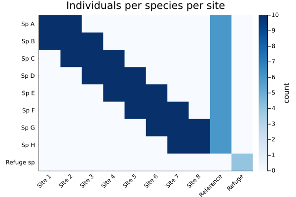
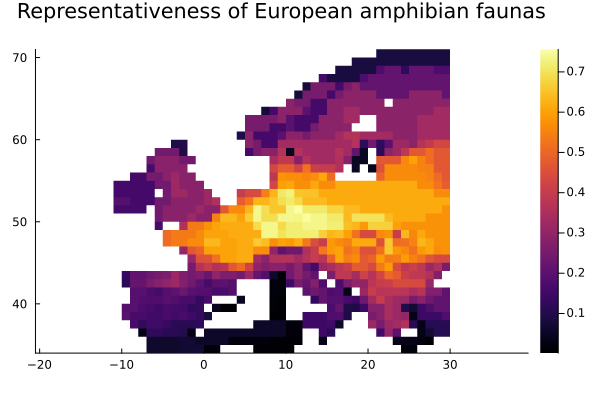

Building a metacommunity
Everything this package computes starts from a Metacommunity, and it is made of three things:
- types - what the individuals are, and how similar they are to each other;
- a partition - how the whole is divided into subcommunities;
- abundances - how much of each type is in each subcommunity.
If you supply only abundances, the other two are inferred: types become UniqueTypes (all wholly distinct from one another), and the partition becomes one subcommunity per column.
You have X, write Y
julia> using Diversityjulia> using LinearAlgebrajulia> counts = [10 0 0; 5 5 0; 0 5 10] # 3 types down, 3 subcommunities across3×3 Matrix{Int64}: 10 0 0 5 5 0 0 5 10julia> Z = [1.0 0.5 0.0; 0.5 1.0 0.5; 0.0 0.5 1.0]3×3 Matrix{Float64}: 1.0 0.5 0.0 0.5 1.0 0.5 0.0 0.5 1.0
| what you have | what to write | what you get |
|---|---|---|
| one community, no similarity | Metacommunity(vec) | UniqueTypes, Onecommunity |
| several subcommunities, no similarity | Metacommunity(matrix) | UniqueTypes, one subcommunity per column |
| a similarity matrix as well | Metacommunity(matrix, Z) | GeneralTypes built from Z |
| named types or subcommunities | Metacommunity(matrix, types, partition) | exactly what you passed |
| a phylogeny, sequences or a VCF | Metacommunity(matrix, PhyloBranches(tree)) etc. | see Phylogenetic and Genetic diversity |
an EcoBase assemblage | Metacommunity(assemblage) | its occurrences and places, with UniqueTypes - or GeneralTypes holding its similarity, if it has any |
| the same structure, new numbers | Metacommunity(newabundances, oldmeta) | reuses the types and partition |
julia> Metacommunity(counts)Metacommunity{Float64, Matrix{Int64}, Matrix{Float64}, UniqueTypes, Subcommunities} with 3 species in 3 subcommunities measuring Unique diversity. Species names: 1, 2, 3 Subcommunity names: 1, 2, 3julia> Metacommunity(counts, Z)Metacommunity{Float64, Matrix{Int64}, Matrix{Float64}, GeneralTypes{Float64, Matrix{Float64}, Vector{Int64}}, Subcommunities} with 3 species in 3 subcommunities measuring Arbitrary Z diversity. Species names: 1, 2, 3 Subcommunity names: 1, 2, 3julia> Metacommunity(counts, UniqueTypes(["ash", "oak", "elm"]), Subcommunities(["north", "middle", "south"]))Metacommunity{Float64, Matrix{Int64}, Matrix{Float64}, UniqueTypes, Subcommunities} with 3 species in 3 subcommunities measuring Unique diversity. Species names: ash, oak, elm Subcommunity names: north, middle, south
Naming your types and subcommunities costs one line and pays for itself the moment you read a results table, because the names appear in the type_name and partition_name columns.
Counts or proportions
You can pass either, but they are treated differently, and the difference is deliberate.
julia> getabundance(Metacommunity(counts)) # counts: normalised silently3×3 Matrix{Float64}: 0.285714 0.0 0.0 0.142857 0.142857 0.0 0.0 0.142857 0.285714
Integer counts are counts, so they are divided by their total without comment. Floating-point abundances are assumed to be relative already, so if they do not sum to one you get a warning:
julia> percolumn = counts ./ sum(counts, dims = 1) # each column sums to 1 - a common mistake3×3 Matrix{Float64}: 0.666667 0.0 0.0 0.333333 0.5 0.0 0.0 0.5 1.0julia> sum(percolumn) # ... so the whole thing sums to 3, not 13.0
Handing that to Metacommunity gets you a warning and a correction:
julia> Metacommunity(percolumn);
┌ Warning: Abundances not normalised to 1, correcting...
└ @ Diversity Metacommunity.jl:124Abundances here are relative to the whole metacommunity, not to each subcommunity - the column sums are the subcommunity weights, and normalising per column throws them away, making every subcommunity look the same size. If you see it, you should probably go back to the original data and normalise over the whole metacommunity.
A worked example
Ten sites and nine species, built so you can predict what each measure will say:
- Sites 1-8 lie along a gradient, each holding two or three species, turning over as you move along it.
- Reference holds all eight gradient species, evenly.
- Refuge is tiny and holds a single species found nowhere else.
julia> species = ["Sp $c" for c in "ABCDEFGH"];julia> push!(species, "Refuge sp");julia> sites = ["Site $i" for i in 1:8];julia> push!(sites, "Reference"); push!(sites, "Refuge");julia> abundance = zeros(Int, 9, 10);julia> for j in 1:8, i in max(1, j - 1):min(8, j + 1) abundance[i, j] = 10 # a moving window along the gradient endjulia> abundance[1:8, 9] .= 6; # Reference: every species, evenlyjulia> abundance[9, 10] = 4; # Refuge: one species, found nowhere elsejulia> mc = Metacommunity(abundance, UniqueTypes(species), Subcommunities(sites))Metacommunity{Float64, Matrix{Int64}, Matrix{Float64}, UniqueTypes, Subcommunities} with 9 species in 10 subcommunities measuring Unique diversity. Species names: Sp A, Sp B, Sp C...Sp H, Refuge sp Subcommunity names: Site 1, Site 2, Site 3...Reference, Refuge
That structure is much easier to see than to read off the loop:
using Plots
heatmap(sites, species, abundance, yflip = true, xrotation = 45, c = :Blues,
title = "Individuals per species per site", colorbar_title = "count")
The dark band down the diagonal is the gradient: each site shares species with its neighbours and none at all with the far end. Reference is the one column touching every gradient species, at lower abundance. Refuge is the single cell in a row of its own - nothing else is in that site, and that species is nowhere else.
Before running anything, decide what you expect. Reference should be the most diverse in isolation and the most representative; Refuge should be the least diverse in isolation but the most distinctive, and should contribute most per individual. Now check:
julia> using DataFramesjulia> results = DataFrame(site = sites, weight = round.(getweight(mc), digits = 3), ᾱ = round.(norm_sub_alpha(mc, 1).diversity, digits = 2), ρ̄ = round.(norm_sub_rho(mc, 1).diversity, digits = 2), β = round.(raw_sub_beta(mc, 1).diversity, digits = 2), γ = round.(sub_gamma(mc, 1).diversity, digits = 1))10×6 DataFrame Row │ site weight ᾱ ρ̄ β γ │ String Float64 Float64 Float64 Float64 Float64 ─────┼──────────────────────────────────────────────────────── 1 │ Site 1 0.074 2.0 0.22 0.33 8.9 2 │ Site 2 0.11 3.0 0.36 0.31 8.4 3 │ Site 3 0.11 3.0 0.4 0.28 7.6 4 │ Site 4 0.11 3.0 0.4 0.28 7.6 5 │ Site 5 0.11 3.0 0.4 0.28 7.6 6 │ Site 6 0.11 3.0 0.4 0.28 7.6 7 │ Site 7 0.11 3.0 0.36 0.31 8.4 8 │ Site 8 0.074 2.0 0.22 0.33 8.9 9 │ Reference 0.176 8.0 0.98 0.18 8.2 10 │ Refuge 0.015 1.0 0.01 1.0 68.0
Two things worth reading off that table:
- Refuge scores
β = 1, the maximum possible. Distinctiveness is 1 exactly when nothing outside the subcommunity resembles anything inside it - which is true here by construction. Its representativeness is correspondingly at its minimum, which is the subcommunity's own weight. - Refuge has the lowest
ᾱand much the highestγ. A single-species site is as dull as a site can be in isolation, yet each of its individuals contributes far more to the diversity of the whole than an individual from anywhere else. Alpha and beta alone would have told you to ignore it.
How the partition changes the answer
The same abundances, divided three ways.
Undivided. With one subcommunity there is nothing to be distinct from, so every beta measure collapses to 1 and alpha equals gamma:
julia> undivided = Metacommunity(vec(sum(abundance, dims = 2)), UniqueTypes(species), Onecommunity())Metacommunity{Float64, Vector{Int64}, Matrix{Float64}, UniqueTypes, Onecommunity} with 9 species in 1 subcommunity measuring Unique diversity. Species names: Sp A, Sp B, Sp C...Sp H, Refuge sp Subcommunity names: 1julia> norm_sub_beta(undivided, 1).diversity1-element Vector{Float64}: 1.0julia> norm_sub_rho(undivided, 1).diversity1-element Vector{Float64}: 1.0
Divided. The gamma diversity of the whole is unchanged - dividing a community does not alter what is in it - but the beta measures now carry information:
julia> meta_gamma(undivided, 1).diversity1-element Vector{Float64}: 8.304589883293069julia> meta_gamma(mc, 1).diversity1-element Vector{Float64}: 8.304589883293062julia> norm_meta_beta(mc, 1).diversity1-element Vector{Float64}: 2.5115292759185666
Shattered. Now split Reference into two identical halves. This creates no new ecology: the two halves have the same composition as their parent, so an honest measure of "how many distinct subcommunities are there?" must not move.
julia> halves = hcat(abundance[:, 1:8], abundance[:, 9] .÷ 2, abundance[:, 9] .÷ 2, abundance[:, 10])9×11 Matrix{Int64}: 10 10 0 0 0 0 0 0 3 3 0 10 10 10 0 0 0 0 0 3 3 0 0 10 10 10 0 0 0 0 3 3 0 0 0 10 10 10 0 0 0 3 3 0 0 0 0 10 10 10 0 0 3 3 0 0 0 0 0 10 10 10 0 3 3 0 0 0 0 0 0 10 10 10 3 3 0 0 0 0 0 0 0 10 10 3 3 0 0 0 0 0 0 0 0 0 0 0 4julia> shattered = Metacommunity(halves, UniqueTypes(species), Subcommunities(11))Metacommunity{Float64, Matrix{Int64}, Matrix{Float64}, UniqueTypes, Subcommunities} with 9 species in 11 subcommunities measuring Unique diversity. Species names: Sp A, Sp B, Sp C...Sp H, Refuge sp Subcommunity names: 1, 2, 3...10, 11julia> norm_meta_beta(mc, 1).diversity, norm_meta_beta(shattered, 1).diversity([2.5115292759185666], [2.5115292759185666])julia> norm_meta_alpha(mc, 1).diversity, norm_meta_alpha(shattered, 1).diversity([3.3065869320817467], [3.3065869320817467])
The normalised measures do not move. The raw ones deliberately do:
julia> raw_meta_rho(mc, 1).diversity, raw_meta_rho(shattered, 1).diversity([3.6328925452090037], [4.1055892048434455])
This is the clearest way to see what "raw" and "normalised" mean. Raw redundancy should rise when you cut a subcommunity in two, because you have genuinely created two subcommunities that duplicate each other. Normalised measures answer the question "how many distinct subcommunities are there really?", and the answer is unchanged. The two differ by exactly the subcommunity's weight w: a raw measure keeps it and so sees size, a normalised one divides it out and cannot. Which you want depends on the question you are asking; see What this package does differently for why the framework guarantees the second.
Getting the results out
Every measure returns a long DataFrame in the same shape, whatever the measure and whatever the scale. That is convenient for combining results and inconvenient for reading, so to get back to a familiar types × subcommunities matrix, unstack it:
julia> ind = inddiv(NormalisedAlpha(mc), 1)90×8 DataFrame Row │ div_type measure q type_level type_name partition_leve ⋯ │ String String Int64 String String String ⋯ ─────┼────────────────────────────────────────────────────────────────────────── 1 │ Unique NormalisedAlpha 1 type Sp A subcommunity ⋯ 2 │ Unique NormalisedAlpha 1 type Sp B subcommunity 3 │ Unique NormalisedAlpha 1 type Sp C subcommunity 4 │ Unique NormalisedAlpha 1 type Sp D subcommunity 5 │ Unique NormalisedAlpha 1 type Sp E subcommunity ⋯ 6 │ Unique NormalisedAlpha 1 type Sp F subcommunity 7 │ Unique NormalisedAlpha 1 type Sp G subcommunity 8 │ Unique NormalisedAlpha 1 type Sp H subcommunity ⋮ │ ⋮ ⋮ ⋮ ⋮ ⋮ ⋮ ⋱ 84 │ Unique NormalisedAlpha 1 type Sp C subcommunity ⋯ 85 │ Unique NormalisedAlpha 1 type Sp D subcommunity 86 │ Unique NormalisedAlpha 1 type Sp E subcommunity 87 │ Unique NormalisedAlpha 1 type Sp F subcommunity 88 │ Unique NormalisedAlpha 1 type Sp G subcommunity ⋯ 89 │ Unique NormalisedAlpha 1 type Sp H subcommunity 90 │ Unique NormalisedAlpha 1 type Refuge sp subcommunity 3 columns and 75 rows omittedjulia> unstack(ind, :type_name, :partition_name, :diversity)9×11 DataFrame Row │ type_name Site 1 Site 2 Site 3 Site 4 Site 5 Site 6 ⋯ │ String Float64? Float64? Float64? Float64? Float64? Float64? ⋯ ─────┼────────────────────────────────────────────────────────────────────────── 1 │ Sp A 2.0 3.0 Inf Inf Inf Inf ⋯ 2 │ Sp B 2.0 3.0 3.0 Inf Inf Inf 3 │ Sp C Inf 3.0 3.0 3.0 Inf Inf 4 │ Sp D Inf Inf 3.0 3.0 3.0 Inf 5 │ Sp E Inf Inf Inf 3.0 3.0 3.0 ⋯ 6 │ Sp F Inf Inf Inf Inf 3.0 3.0 7 │ Sp G Inf Inf Inf Inf Inf 3.0 8 │ Sp H Inf Inf Inf Inf Inf Inf 9 │ Refuge sp Inf Inf Inf Inf Inf Inf ⋯ 4 columns omitted
The columns that identify a row are div_type, measure, q, type_level, type_name, partition_level and partition_name; diversity holds the answer. Asking for several orders at once and filtering afterwards is cheaper than repeated calls - not because the arithmetic changes, which it does not, but because one call builds one table where several calls build several and leave you to join them:
julia> profile = subdiv(NormalisedAlpha(mc), [0, 1, 2]);julia> filter(row -> row.partition_name == "Reference", profile)3×8 DataFrame Row │ div_type measure q type_level type_name partition_leve ⋯ │ String String Int64 String String String ⋯ ─────┼────────────────────────────────────────────────────────────────────────── 1 │ Unique NormalisedAlpha 0 types subcommunity ⋯ 2 │ Unique NormalisedAlpha 1 types subcommunity 3 │ Unique NormalisedAlpha 2 types subcommunity 3 columns omitted
Now on real data
The dataset above was built so you could check the measures against your own expectations. Real data is the other way round - you do not know the answer, which is the point of measuring. Here is the same analysis on the European amphibian distributions that ship with SpatialEcology: 73 species across 1010 grid cells.
Any EcoBase assemblage can be measured directly, with no conversion:
julia> using Diversity, SpatialEcology, CSV, DataFramesjulia> file = joinpath(dirname(pathof(SpatialEcology)), "..", "data", "amph_Europe.csv");julia> raw = CSV.read(file, DataFrame);julia> amph = Assemblage(raw[!, 4:end], raw[!, 1:3], sitecolumns = false)[ Info: Matrix data assumed to be presence-absence Assemblage with 73 species in 1010 sites Species names: Salamandra_salamandra, _Calotriton_asper, _Calotriton_arnoldi...Chioglossa_lusitanica, Pleurodeles_waltl Site names: 1, 2, 3...1009, 1010julia> countsubcommunities(amph), counttypes(amph)(1010, 73)
julia> rho = norm_sub_rho(amph, 1)[!, :diversity];julia> gamma = sub_gamma(amph, 1)[!, :diversity];julia> extrema(rho)(0.0015166819680988435, 0.7559785032793942)julia> extrema(gamma)(10.648018648018521, 1369.918374086275)
Representativeness runs from 0.0015 to 0.76: some cells hold an assemblage much like Europe's as a whole, others almost nothing like it. Contribution per individual spans two orders of magnitude - the cells at the top are those holding species found almost nowhere else, which is exactly the "hidden diversity" the Refuge site showed in miniature.
Because the assemblage carries its own coordinates, the results can go straight onto a map:
using Plots
plot(norm_sub_rho(amph, 1), amph, title = "Representativeness of European amphibian faunas",
markersize = 2)
Read that as a question about reserve selection: the dark cells are the ones whose amphibian fauna is least like Europe's overall. They are not necessarily the most species-rich - that is what norm_sub_alpha would show - and the difference between the two maps is precisely what the framework was built to expose.
Taking a view of part of one
view restricts a metacommunity to some of its types, some of its subcommunities, or both, and is how the rest of the EcoBase ecosystem subsets an assemblage. Indices, names and boolean masks all work:
julia> sub = view(mc, sites = ["Reference", "Refuge"])Diversity.SubAssemblage{Float64, UniqueTypes, Subcommunities, SubArray{Float64, 2, Matrix{Float64}, Tuple{Base.OneTo{Int64}, Vector{Int64}}, false}} with 9 species in 2 subcommunities measuring Unique diversity. Species names: Sp A, Sp B, Sp C...Sp H, Refuge sp Subcommunity names: Reference, Refugejulia> norm_sub_alpha(sub, 1)[!, [:partition_name, :diversity]]2×2 DataFrame Row │ partition_name diversity │ String Float64 ─────┼─────────────────────────── 1 │ Reference 8.0 2 │ Refuge 1.0
The result is a genuine view: it aliases the original's abundances rather than copying them, and it holds only part of them, so they no longer sum to one. That is deliberate. Only a Metacommunity requires abundances summing to one, and the measures normalise what they read, so the subset is measured as a metacommunity in its own right. Convert it with Metacommunity(sub) if you want a cached object instead of a window.
species selects things, which is not always what the word suggests. For a phylogeny a thing is a branch, because PhyloBranches measures over branches rather than over species - printing the metacommunity tells you what it calls its units. The keyword names come from EcoBase.
Restricting species on a phylogeny also gives up the tree: an arbitrary set of branches is not one, so the types become a GeneralTypes holding the corresponding similarity submatrix. It measures identically, but reports itself as arbitrary rather than phylogenetic. Restricting only sites leaves the phylogeny untouched.
Asking for several things at once
diversity takes a collection of levels, a collection of measures and one or more values of q, and answers them all together:
julia> using Diversity.ShortNamesjulia> levels = [subcommunityDiversity, metacommunityDiversity];julia> result = diversity(levels, [ᾱ, ρ̄, Γ], mc, [0, 1, 2]);julia> size(result)(99, 8)julia> unique(result.measure)3-element Vector{String}: "NormalisedAlpha" "NormalisedRho" "Gamma"
This is worth preferring over separate calls, and the reason is the result rather than the arithmetic. Every route does the same power means; what differs is how many tables get built on the way. diversity assembles one, where six wrapper calls build six and you then have to vcat them. Measured over 200 types and 200,000 subcommunities, for the call above: 165 MiB against 275 MiB, for the same answer in the same time.
It also saves you naming the same metacommunity six times, which matters more than it sounds - see Large metacommunities for what does and does not scale.
Getting something other than a DataFrame
Every function that returns results takes an optional first argument saying what to return, in the same way as CSV.read(file, DataFrame):
julia> using Tablesjulia> columns = subdiv(Tables.columntable, ᾱ(mc), 1);julia> keys(columns)(:div_type, :measure, :q, :type_level, :type_name, :partition_level, :partition_name, :diversity)
Anything implementing the Tables.jl interface will do, so results can go straight to a file with CSV.write or Arrow.write without a DataFrame in between. A DataFrame remains the default. That choice matters most when the result is large - see Large metacommunities.
Base.view — Function
view(mc::AbstractMetacommunity; species, sites)Takes a view of part of a metacommunity, returning a SubAssemblage over the types at species and the subcommunities at sites. Either may be given as indices, as a boolean mask, or as names, and either may be omitted to keep everything.
Warning: species selects things, whatever the metacommunity's types call them. For a phylogeny a thing is a branch, not a species, because PhyloBranches measures over branches – ask EcoBase.thingkind if in doubt, or look at what show calls them. The keyword name is EcoBase's.
A dimension you do not restrict keeps its object untouched, so restricting only sites leaves a phylogeny a phylogeny. Restricting species cannot: an arbitrary subset of branches is no longer a tree, so the types become a GeneralTypes carrying the scaled similarity submatrix, which measures identically but reports itself as "Arbitrary Z" and drops any added output columns.
The result aliases the parent's abundances rather than copying them, so it reflects later changes to them, and unlike a Metacommunity it caches nothing. Its abundances are a subset of the parent's and so do not sum to one; the measures normalise them on reading, which means the subset measures as a metacommunity in its own right. Use Metacommunity(view(...)) for a converted, cached object instead.
- Diversity.API
- Diversity.Ecology
- The framework
- Genetic diversity
- Diversity.Hill
- Diversity.jl
- Diversity.Jost
- Large metacommunities
- Building a metacommunity
- Phylogenetic diversity
- Coming from vegan
Diversity.APIDiversity.DiversityDiversity.EcologyDiversity.HillDiversity.JostDiversity.ShortNamesDiversity.individualDiversityDiversity.metacommunityDiversityDiversity.subcommunityDiversityDiversity.API.AbstractMetacommunityDiversity.API.AbstractPartitionDiversity.API.AbstractTypesDiversity.AbstractGeneticDiversity.AbstractPhyloTypesDiversity.DiversityLevelDiversity.DiversityMeasureDiversity.GammaDiversity.GeneralTypesDiversity.GeneralTypesDiversity.MetacommunityDiversity.NormalisedAlphaDiversity.NormalisedBetaDiversity.NormalisedRhoDiversity.OnecommunityDiversity.PhyloBranchesDiversity.PowerMeanMeasureDiversity.RawAlphaDiversity.RawBetaDiversity.RawRhoDiversity.RelativeEntropyMeasureDiversity.SpeciesDiversity.SubAssemblageDiversity.SubcommunitiesDiversity.TaxonomyDiversity.UniqueTypesBase.viewBase.viewDiversity.API._addedoutputcolsDiversity.API._calcabundanceDiversity.API._calcordinarinessDiversity.API._calcsimilarityDiversity.API._countsubcommunitiesDiversity.API._counttypesDiversity.API._getabundanceDiversity.API._getaddedoutputDiversity.API._getdiversitynameDiversity.API._getmetaabundanceDiversity.API._getmetaordinariness!Diversity.API._getordinariness!Diversity.API._getpartitionDiversity.API._getscaleDiversity.API._getsubcommunitynamesDiversity.API._gettypenamesDiversity.API._gettypesDiversity.API._getweightDiversity.API._subsetpartitionDiversity.API._subsettypesDiversity.API.floattypesDiversity.API.mcmatchDiversity.Ecology.faith_pdDiversity.Ecology.generalisedfaith_pdDiversity.Ecology.generalisedjaccardDiversity.Ecology.generalisedrichnessDiversity.Ecology.generalisedshannonDiversity.Ecology.generalisedsimpsonDiversity.Ecology.gowerDiversity.Ecology.jaccardDiversity.Ecology.pielouDiversity.Ecology.richnessDiversity.Ecology.shannonDiversity.Ecology.simpsonDiversity.GeneticTypeDiversity.Hill.hillnumberDiversity.Jost.jostalphaDiversity.Jost.jostbetaDiversity._getmetaDiversity.addedoutputcolsDiversity.calcsimilarityDiversity.countsubcommunitiesDiversity.counttypesDiversity.diversityDiversity.getASCIINameDiversity.getFullNameDiversity.getNameDiversity.getabundanceDiversity.getaddedoutputDiversity.getdiversitynameDiversity.getmetaabundanceDiversity.getmetaordinariness!Diversity.getordinariness!Diversity.getpartitionDiversity.getsubcommunitynamesDiversity.gettypenamesDiversity.gettypesDiversity.getweightDiversity.hassimilarityDiversity.inddivDiversity.meta_gammaDiversity.metadivDiversity.norm_meta_alphaDiversity.norm_meta_betaDiversity.norm_meta_rhoDiversity.norm_sub_alphaDiversity.norm_sub_betaDiversity.norm_sub_rhoDiversity.powermeanDiversity.qDDiversity.qDZDiversity.raw_meta_alphaDiversity.raw_meta_betaDiversity.raw_meta_rhoDiversity.raw_sub_alphaDiversity.raw_sub_betaDiversity.raw_sub_rhoDiversity.sub_gammaDiversity.subdivDiversity.vcf_dataframe